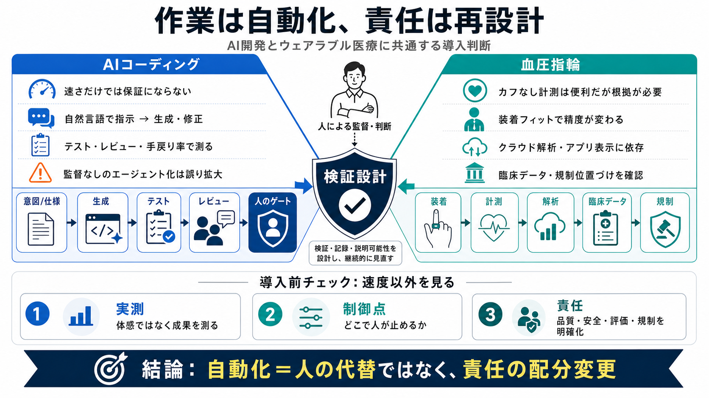

主張
速く“なった気”でも、平均では遅いことがある（METRの例）

AIはソフトウェア開発もウェアラブル医療も「作業」を速く自動化する。 しかし品質・安全・評価・規制を“同時に”設計し直さないと、成果は保証されない。
AIで開発が速くなるほど、「体感の改善」と「実測の成果」がズレる可能性がある。 そのズレは、テスト・レビュー・仕様の渡し方に左右される。
これまでの「コードを書く」中心から、「意図を指示して生成・修正する」協業へ移る。 AIはコード生成だけでなく、翻訳・デバッグ・テスト反復も分担する。
AIコーディングの要点は、生成フェーズだけでなく「何を渡し、何を検証するか」を設計すること。 ここが品質と安全の境界になる。
AWS・Google・SpotifyなどでAIコード生成が使われ、開発体験は「チャットと協業」に近づいている。 スタートアップやハッカソンのプロトタイピングも加速したとされる。
不安の中心は「能力が不要になる」よりも、「採用・運用の評価軸が変わらない」ことにある。 若手がハンドコーディングを求められ、摩擦が残る。
AIがエージェント化すると、目的→テスト→文書化まで自律的に進む。 その分、長時間監督を外したときに誤りが拡大し、原因究明が難しくなる。
Signal Ringはカフなしで血圧に近いデータを出し、クラウド解析とアプリでトレンドを示そうとする。 だが医療として信頼されるには、精度・装着・クラウド依存・規制が必須になる。
血圧は健康上の意思決定に直結する指標なので、デモ精度だけでは足りない。 例として、リングのフィット要因やFDA未承認（ウェルネス寄り）などが障壁になる。
AIコーディングも血圧指輪も、核心は人の役割を置き換えるより再配分することにある。 自動化が進むほど、監督・品質・安全・評価・規制対応が重要になる。
導入・意思決定では「速さ」ではなく、検証設計とリスクの制御点を先に確認する。 その差が、失敗コストと信頼の差になる。
AIの普及で“作業”は置き換わるが、“責任”は移動しない。 だからこそ検証・評価・安全・規制を再設計し、体感ではなく実測で前に進む。
No references found